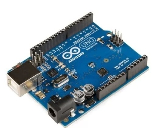

.jpg)
This model is developed usin Arduino Uno.Arduino Uno is an open-source microcontroller board based on the processor ATmega328P. It has 14 digital input/output pins (of which 6 can be used as PWM outputs), 6 analog inputs, a USB connection, a power jack, an ICSP header and a reset button. It contains everything needed to support the microcontroller. Just plug it into a computer with a USB cable or power it with an adapter to get started.
.jpg)
L293D is a motor driver integrated chip. It is a dual H-bridge motor driver integrated chip. It also acts as an amplifier. It takes on a low current signal and gives the output of a high current signal.
The main component in the operation of the obstacle-avoiding car is the Ultrasonic sensor HC-SR04. This sensor uses the sonar principle to calculate the distance to the objects in front of it. This sensor is used in a lot of projects which require fast and economical distance measurement. This is possible because the sensor is very small in size and can be mounted anywhere on the chassis.There are 4 main components to this project: Arduino Uno, Ultrasonic Sensor, DC motor, L293D motor driver.When the power supply is connected to the Arduino, the motors start rotating and the car starts moving. As soon as the car reaches near an obstacle, there is a threshold distance set by the user in the Arduino code. If the distance of the obstacle is below this threshold then the ultrasonic sensor sends a signal to the Arduino.As soon as Arduino gets the signal from the ultrasonic sensor, it sends the signal to the motor driver to stop rotating the motors.After this, it again sends the signal to the motor driver to turn the car to the left side. And the car is turned to the left side till the point when there is no obstacle in front of the car. The car again starts moving forward and moves forward till it finds another obstacle. The above process is repeated till the power supply is cut off.
.gif)
.jpg)
| Pins on Arduino Uno | Pins on Ultrasonic Sensor |
| 5V | VCC |
| GND | GND |
| digital Pin 10 | Echo |
| Digital Pin 11 | Trig |
| Pins on Arduino Uno | Pins on L293D |
| 5V | Pin 1 |
| GND | Pin 5 |
| Digital Pin 2 | Pin 10 |
| Digital Pin 3 | Pin 15 |
| Digital Pin 8 | Pin 7 |
| Digital Pin 9 | Pin 2 |